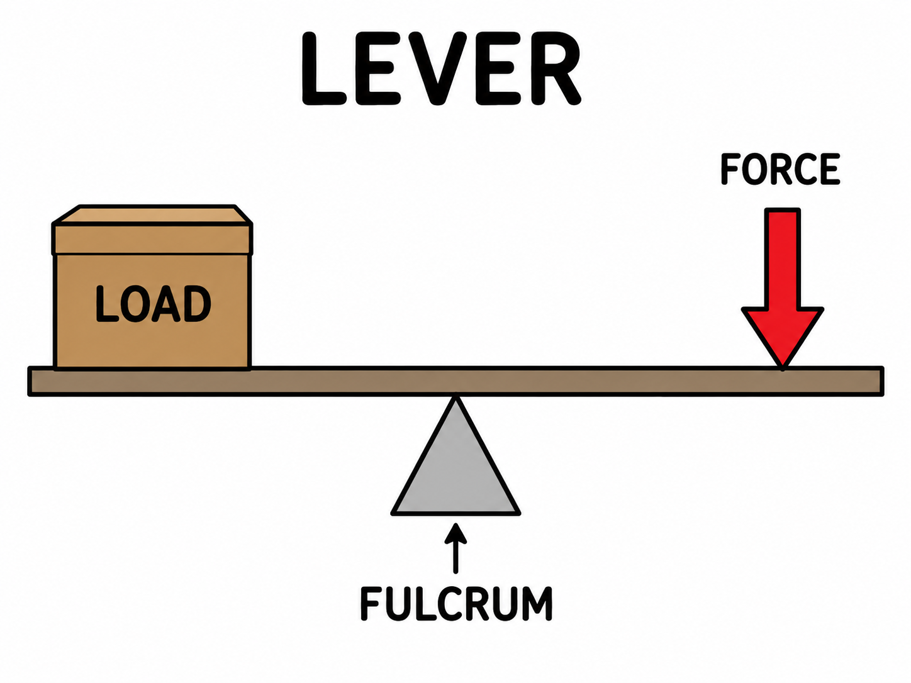
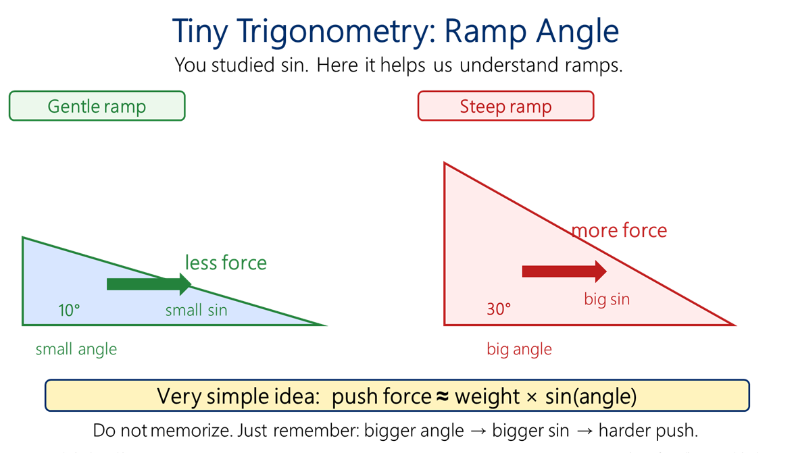
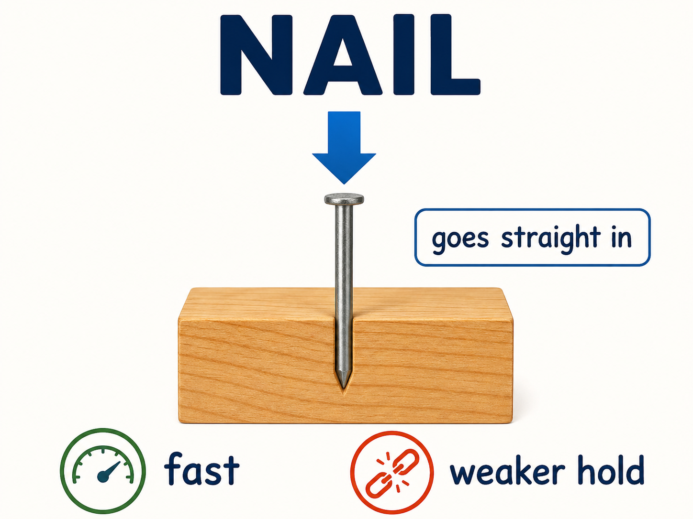

In this lesson, we connect levers with all simple machines. A simple machine does not create energy. It helps us use force in a smarter way. Sometimes we use a smaller force over a longer distance. Sometimes we change the direction of force. Sometimes we change linear motion into rotation.

Big question
How can a small force move a heavy object?
Main rule
You do not get something for nothing.
Engineering idea
Less force usually means more distance.
Lesson map
Key words
Read these words first. These are the basic words for this lesson.
| Word | Simple meaning |
|---|---|
| force | a push or a pull |
| load | the object or weight we want to move |
| effort | the force we apply |
| fulcrum | the support point of a lever |
| distance | how far something moves |
| work | force × distance |
| mechanical advantage | how much a machine helps force |
| friction | force that resists motion |
| inclined plane | a ramp |
| wedge | a moving inclined plane that separates material |
| screw | an inclined plane wrapped around a cylinder |
1. Review: force, distance and work
Before we study simple machines, we must remember three basic ideas.
Force is a push or a pull. Distance is how far something moves. Work means force with movement.
W = work, joule (J)
F = force, newton (N)
s = distance, meter (m)
If you push a wall and it does not move, you use force, but you do not do useful mechanical work. If you push a hospital bed and it moves, you do work.
Example
Force = 50 N
Distance = 4 m
W = 50 × 4 = 200 J
2. Lever idea
A lever is one of the oldest and most important simple machines.
A lever has three parts: the effort, the load, and the fulcrum. The effort is the force we apply. The load is the object we want to move. The fulcrum is the support point.
Core idea: If your effort is far from the fulcrum, a smaller force can move a larger load.
This is why a long handle helps. A long wrench, a crowbar, scissors, pliers, and many medical tools use this idea.
3. Lever formula
A lever works because of torque. Torque is turning effect.
For a simple balanced lever, the turning effect on one side equals the turning effect on the other side.
F₁ = effort force
d₁ = effort arm distance
F₂ = load force
d₂ = load arm distance
Simple meaning: a small force can balance a big force if the small force acts at a longer distance from the fulcrum.
Example
Effort arm = 2 m
Load arm = 0.5 m
Load = 100 N
F₁ × 2 = 100 × 0.5
F₁ × 2 = 50
F₁ = 25 N
Try it
Effort arm = 3 m
Load arm = 1 m
Load = 90 N
Effort force = ?
Show answer
F₁ × 3 = 90 × 1
F₁ = 90 / 3 = 30 N
4. Three classes of levers
Levers can be grouped by the position of the fulcrum, effort, and load.
Fulcrum is in the middle.
Example: seesaw, scissors.
Load is in the middle.
Example: wheelbarrow.
Effort is in the middle.
Example: tweezers, human arm.
Do not memorize too much. The important skill is to find the fulcrum, effort, and load.
Class activity
Look at scissors, tweezers, and a door handle. For each one, point to the fulcrum, effort, and load.
5. Golden rule of mechanics
This is the most important rule for simple machines.
You can make force smaller, but you usually must move through a longer distance.
A machine does not create energy. A machine changes how we use force and distance.
No magic: If a lever helps you use a smaller force, your hand usually moves farther than the load.
This idea connects all simple machines: lever, wheel and axle, pulley, ramp, wedge, and screw.
6. Wheel and axle
A wheel and axle help movement in two ways.
First, a wheel reduces sliding friction. Rolling is usually easier than dragging. This is why beds, carts, chairs, and equipment stands have wheels.
Second, a large wheel connected to a small axle can work like a rotating lever.

Simple meaning: a bigger handle or wheel can make turning easier, but your hand moves a longer path.
Hospital example: a rolling bed is easier to move than a bed without wheels. But wheels must be clean, locked when needed, and checked for damage.
7. Pulley
A pulley is a wheel with a rope or belt. A pulley can change the direction of force. A group of pulleys can also reduce the force needed to lift a load.
But the golden rule still applies. If the force becomes smaller, you must pull more rope.
Simple example
If two rope parts support the load, the ideal effort force can be about half of the load. In real life, friction makes it a little worse.
Hospital example: patient lifts and lifting systems often use pulley-like ideas to move heavy loads safely.
8. Inclined plane
An inclined plane is a ramp.
Instead of lifting an object straight up, we push or pull it along a longer path. The force can be smaller, but the distance is longer.

This is useful for wheelchairs, hospital carts, delivery carts, and moving equipment.
A steep ramp needs more force. A gentle ramp needs less force, but it is longer.
9. Simple trigonometry on a ramp
We can connect the ramp with simple trigonometry. You studied sine before. Here it has a real engineering meaning.

W = weight
θ = ramp angle
If the angle is small, sinθ is small. The force along the ramp is smaller. If the angle is large, sinθ is larger. The ramp feels harder.
Example
Weight = 100 N
θ = 30°
sin30° = 0.5
F = 100 × 0.5 = 50 N
Try it
Weight = 200 N
θ = 30°
sin30° = 0.5
Force along ramp = ?
Show answer
F = 200 × 0.5 = 100 N
10. Wedge
A wedge is like a moving inclined plane.
When you push a wedge forward, the wedge pushes material sideways. This can split, cut, or separate material.

Examples: knife, scalpel blade, needle tip, axe, chisel, and the cutting edge of scissors.
A sharper wedge usually needs less force to enter material, but it may be weaker and easier to damage. Again, engineering needs balance.
11. Cutting tools: scalpel, needle and scissors
Medical tools use simple machine ideas.

A scalpel blade is a wedge. It changes a forward pushing force into separating force at the cut.
A needle tip is also a tiny wedge. It must be sharp enough to enter tissue with less force.

Scissors are more complex. They use levers at the handles and wedges at the blades. This is a good example of simple machines working together.
12. Screw
A screw is an inclined plane wrapped around a cylinder.
When you turn the screw, the thread moves forward into the material. The screw changes rotation into forward motion.
A screw needs more time than a nail, but it can hold better because the thread grips the material.

Nail: goes straight in.
Screw: turns in and grips.
IT example: computers and medical devices use many screws. Screws allow parts to be assembled, opened, repaired, and replaced.
13. Simple machines in hospital and IT equipment
Simple machines are not only old technology. They are inside modern equipment.

- Hospital beds use wheels, screws, levers, and link mechanisms.
- Patient lifts use pulleys and levers.
- Scissors, clamps, scalpels, and needles use wedges and levers.
- Printers use rollers, gears, wheels, and screws.
- Old computers and medical devices use screws, hinges, fans, and sliders.
For medical IT work, this matters. If you understand simple mechanisms, old equipment becomes less scary.
14. Classroom activities
Activity 1 — Human lever
Three students make a lever model. One student is the fulcrum. One student is the effort. One student is the load. Move the effort closer and farther from the fulcrum. Ask: when is it easier?
Activity 2 — Find simple machines
Students look around the classroom. Find wheels, screws, hinges, handles, ramps, wedges, or levers. Draw one example and label it.
Activity 3 — Tool detective
Show scissors, a pen, a screw, and a box cutter picture. Students decide: lever, wedge, screw, wheel, or more than one?
15. Practice problems
Use your calculator. Write the formula first. Work slowly.
Problem 1 — Work
Force = 30 N
Distance = 5 m
Work = ?
Show answer
W = F × s = 30 × 5 = 150 J
Problem 2 — Lever
Effort arm = 2 m
Load arm = 0.5 m
Load = 80 N
Effort force = ?
Show answer
F₁ × 2 = 80 × 0.5
F₁ × 2 = 40
F₁ = 20 N
Problem 3 — Lever
Effort force = 40 N
Effort arm = 3 m
Load arm = 1 m
Load = ?
Show answer
40 × 3 = F₂ × 1
120 = F₂
Load = 120 N
Problem 4 — Ramp and sine
Weight = 300 N
θ = 30°
sin30° = 0.5
Force along ramp = ?
Show answer
F = W × sinθ = 300 × 0.5 = 150 N
Problem 5 — Concept
A screw turns many times before it goes deep into material. Is this free energy?
Show answer
No. The screw uses smaller force over a longer path. This follows the golden rule of mechanics.
16. Summary
- Simple machines help us use force better.
- They do not create energy.
- A lever uses distance from the fulcrum to change force.
- Lever formula: F₁ × d₁ = F₂ × d₂.
- Golden rule: less force usually means more distance.
- Wheel and axle reduce friction and help movement.
- Pulleys change direction and can reduce effort force.
- Inclined planes reduce force by increasing distance.
- Wedges separate material.
- Screws change rotation into forward motion.
- Hospital and IT equipment use these ideas everywhere.
Engineering starts with simple ideas. If you understand simple machines, you can understand more complex machines step by step.